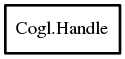

Handle
Object Hierarchy:

Description:
[ SimpleType ]
public struct Handle
Type used for storing references to cogl objects, the CoglHandle is a fully opaque type without any public data members.
Content:
Static methods:
- public static Type get_type ()
- public static Handle @ref (Handle handle)
Increases the reference count of handle by 1
- public static void unref (Handle handle)
Drecreases the reference count of handle by 1; if the
reference count reaches 0, the resources allocated by handle will be freed